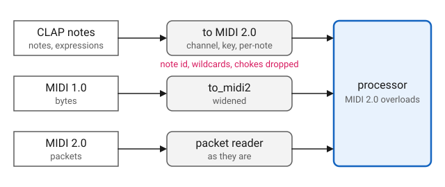

MIDI
Overview
midi_processor is a processor that receives MIDI from the host. A
plugin derives from it and handles the host’s MIDI messages by writing one
function call operator per message type, exactly as a Q MIDI processor
does:
#include <q_plug/midi_processor.hpp>
...
namespace q_plug = cycfi::q_plug;
namespace q = cycfi::q;
...
class my_processor
: public q_plug::midi_processor<my_processor>
{
public:
using midi_processor::operator();
void operator()(q::midi_2_0::control_change msg, std::size_t time);
};The class passes its own type as the template argument. For each message
the host delivers, midi_processor calls operator() on the derived class
with the message and its time, and overload resolution picks the operator
for that message type. The using declaration brings in the base’s
catch-all, an overload for the base message type that does nothing, so a
message with no overload of its own is ignored and a class writes only the
overloads it needs.
The messages are MIDI 2.0, the types in q::midi_2_0: note_on,
note_off, control_change, pitch_bend and the rest, listed under
Message Types. A host may send MIDI as MIDI 1.0 bytes, as MIDI 2.0
packets, or as CLAP’s own note events. QPlug converts each of these to MIDI
2.0 before it reaches the overloads, so a plugin handles MIDI 2.0, whatever
the host sends. MIDI 2.0 is the superset of MIDI 1.0 and has room for what
a CLAP note carries, so nothing is lost on the way: a MIDI 2.0 message
arrives as it is, a MIDI 1.0 one is widened, and a CLAP note becomes the
MIDI 2.0 messages for the same note. See The Dialects.
A plugin that uses the smaller message set passes q::midi_1_0::processor
as the second template argument and writes q::midi_1_0 overloads instead.
It receives every dialect too, best effort: MIDI 1.0 arrives as it is, MIDI
2.0 is narrowed to it, and what MIDI 1.0 cannot express, per-note pitch bend
among it, does not arrive. See MIDI 2.0 in a MIDI 1.0 Processor.
A plugin handles the messages it needs. An instrument handles note_on
and note_off, and as a rule pitch_bend. An effect may handle only
control_change. A processor that takes no MIDI derives from processor
directly, and the host offers it no note input.
The overloads are called on the audio thread, where they must not block or
allocate. Each message arrives at the frame the host stamped it with, before
the call to process that begins on that frame, and time is that frame in
the host’s block. See
Events at the Sample
in processor.
For an example, the Anna processors are instruments and handle four messages:
#include <q_plug/midi_processor.hpp>
...
namespace q_plug = cycfi::q_plug;
namespace midi = cycfi::q::midi_2_0;
class anna_processor : public q_plug::midi_processor<anna_processor>
{
public:
using midi_processor::operator();
...
void operator()(midi::note_on msg, std::size_t time);
void operator()(midi::note_off msg, std::size_t time);
void operator()(midi::control_change msg
, std::size_t time);
void operator()(midi::pitch_bend msg, std::size_t time);
...
};The Dialects
CLAP carries notes in three dialects: MIDI 1.0 bytes, MIDI 2.0 packets, and CLAP’s own note events. QPlug’s note input accepts all three, with MIDI 2.0 declared as the preferred dialect. The host makes the choice. Through clap-wrapper, a VST3 build receives MIDI 1.0 bytes only; an AudioUnit may receive packets. The plugin’s code is the same whichever dialect arrives.
Whichever arrives reaches the same overloads:

- MIDI 2.0 packets
-
Read by Q’s
packet_reader, which gathers what spans several packets, and dispatched as they are. - MIDI 1.0 bytes
-
Widened to MIDI 2.0 by Q’s
to_midi2. See MIDI 1.0 in a MIDI 2.0 Processor. - CLAP notes
-
A note-on or note-off becomes the MIDI 2.0 message for the same channel and key, with its velocity in 16 bits, and a note expression the per-note message of the same name. A plugin never receives a CLAP note as such. See CLAP Notes.
A Universal MIDI Packet is a container. It carries MIDI 1.0 voice messages, message type 0x2, alongside MIDI 2.0’s own, message type 0x4, so one connection carries both. A host sending packets may therefore send plain MIDI 1.0 notes, and those are widened like the bytes.
CLAP Notes
A CLAP note is addressed by its port, channel, key and note id, and any of
them may be -1, a wildcard for every voice that matches the rest. A note-on
or note-off with a definite channel and key becomes the MIDI 2.0 note_on
or note_off for that channel and key, its velocity, from 0 to 1, scaled
to 16 bits with 0 and 1 landing on 0 and 65535. A CLAP note-on of velocity
0 arrives as a note_on of velocity 0, which MIDI 2.0 reads as a quiet
note-on, not a note-off.
A note expression, addressed the same way, becomes the MIDI 2.0 message for the same note:
| CLAP expression | Arrives as |
|---|---|
Pressure, 0 to 1 |
|
Tuning, semitones |
|
Volume, 0 to 4 |
|
Pan, 0 to 1 |
|
Expression, 0 to 1 |
|
Brightness, 0 to 1 |
|
Vibrato, 0 to 1 |
|
What MIDI cannot address does not reach the processor:
-
A note or expression with a wildcard channel or key.
-
A choke, which silences voices without a note-off.
-
The note id. Two notes on the same channel and key are one key to the processor, as they are to MIDI.
MIDI 1.0 in a MIDI 2.0 Processor
A MIDI 1.0 message is widened to MIDI 2.0 as Appendix D.3 of the MIDI 2.0 specification says. The resolution scaling keeps the points a player feels exact: 0 lands on 0, 127 on 65535 or 4294967295, and the center of a wheel on the center.
| MIDI 1.0 message | Arrives as |
|---|---|
|
|
|
|
|
|
|
|
|
One |
|
One |
|
Nothing of their own. The bank waits for
the next |
|
|
|
|
|
|
The system messages |
Themselves, unchanged. |
MIDI 2.0 in a MIDI 1.0 Processor
A plugin built on q::midi_1_0::processor receives MIDI 1.0 bytes as they
are. A packet that holds a MIDI 1.0 voice message or a system message
arrives as that message, unchanged. A MIDI 2.0 voice message, a CLAP note
among them, is narrowed by Q’s to_midi1, as Appendix D.2 says:
| MIDI 2.0 message | Arrives as |
|---|---|
|
|
|
|
|
|
|
|
|
|
|
|
|
|
|
Four |
|
The same, with controllers 99 and 98. |
Relative controllers,
per-note controllers,
per-note management and
|
Nothing. |
Translation replaces the message. In a MIDI 1.0 processor, a MIDI
2.0 note_on is delivered only as a MIDI 1.0 note_on, so a
q::midi_2_0::note_on overload written alongside is never called. The
reverse holds in a MIDI 2.0 processor.
|
System Exclusive
System exclusive that spans packets is gathered and arrives whole, in
either kind of processor: the 7 bit form as a q::midi_1_0::sysex_view,
the 8 bit form as a q::midi_2_0::sysex8_view. A message longer than 1024
bytes is dropped whole.
| A sysex view refers to the reader’s buffer and is valid only for the call. A processor that keeps a system exclusive message copies it. |
| System exclusive reaches a processor only from MIDI 2.0 packets. CLAP’s MIDI 1.0 system exclusive event is not delivered. |
Velocity Zero
MIDI 1.0 means a note-off by a note-on of velocity 0. A MIDI 2.0 processor
never receives one: the translation delivers it as a note_off, as Appendix
D.3.1 says, so the Anna examples handle note_on without a special
case:
#include <q_plug/midi_processor.hpp>
...
namespace q_plug = cycfi::q_plug;
namespace midi = cycfi::q::midi_2_0;
class anna_processor : public q_plug::midi_processor<anna_processor>
{
public:
using midi_processor::operator();
void operator()(midi::note_on msg, std::size_t time);
void note_on(std::uint8_t key, float velocity);
...
};
...
void anna_processor::operator()(midi::note_on msg, std::size_t)
{
// Sixteen bits. A MIDI 1.0 note-on of zero velocity never gets here:
// the translation makes it the note-off MIDI 1.0 means by it.
note_on(msg.key(), float(msg.velocity()) / 65535);
}A MIDI 2.0 note_on of velocity 0 sent by a MIDI 2.0 host is a quiet
note-on, not a note-off, and arrives as one.
A MIDI 1.0 processor receives the MIDI 1.0 message as it is, a note_on
with a velocity of 0, and treats it as a note-off itself. A CLAP or MIDI
2.0 note-on whose velocity scales to 0 reaches it as 1, so that it is not
mistaken for one.
Declaration
template <typename Derived, typename Base = q::midi_2_0::processor>
class midi_processor : public processor, public Base
{
public:
using Base::operator();
protected:
bool has_midi_input() const override;
void midi(q::midi_1_0::raw_message msg, std::size_t time) override;
void midi(q::midi_2_0::packet const& p, std::size_t time) override;
};Base is q::midi_2_0::processor, the default, or q::midi_1_0::processor.
Any other type fails to compile.
Client Interface
The midi_processor is a base class, meant to be derived from and not
instantiated directly. The client writes a class derived from
midi_processor<Derived>, with its own type as Derived, brings in the
base’s catch-all with using midi_processor::operator();, and writes a
function call operator for each message type it handles: see
Function Call. An instrument also overrides channels() to declare
no audio input: see processor.
midi_processor overrides the MIDI functions of processor below. QPlug
calls them, and calls midi on the audio thread. They are protected, and
Derived overrides them only to take MIDI in some other way.
bool has_midi_input() const override;-
Return true, so the host offers the plugin a note input.
void midi(q::midi_1_0::raw_message msg, std::size_t time) override;-
Convert a MIDI 1.0 message to the protocol of
Baseand dispatch it to the overloads ofDerived. void midi(q::midi_2_0::packet const& p, std::size_t time) override;-
Read a MIDI 2.0 packet, convert what it carries to the protocol of
Base, and dispatch that to the overloads ofDerived.
Expressions
As a subclass of processor, midi_processor inherits all the publicly
accessible member functions, member variables, and types of its base class.
Derived is a model of the Q MIDI Processor concept: see
MIDI Processor.
In addition to valid expressions for processor, Derived allows these
expressions.
Notation
Derived-
A class derived from
midi_processor<Derived, Base>. Base-
q::midi_2_0::processor, the default, orq::midi_1_0::processor: the protocol the overloads ofDerivedare written for. proc-
Object of type
Derived. msg-
A Q MIDI message of the protocol of
Base, e.g.q::midi_2_0::note_on. See Message Types. time-
A
std::size_t, the message’s frame in the host’s block.
Function Call
| Expression | Semantics | Return Type |
|---|---|---|
|
Process the message |
|
Message Types
The messages that reach the overloads of Derived, for each Base:
| Messages | q::midi_2_0::processor |
q::midi_1_0::processor |
|---|---|---|
Voice |
|
|
System |
|
The same. |
System exclusive |
|
The same. |
Stream, utility and flex data |
The |
The same. |
MIDI 2.0 carries the system messages unchanged, so a MIDI 2.0 processor
receives them as the q::midi_1_0 types.
Example
Make a monophonic sine instrument, with one output channel, that plays the last note received and stops at its note-off:
#include <q/synth/sin_osc.hpp> // For sin
namespace q = cycfi::q;
namespace q_plug = cycfi::q_plug;
namespace midi = q::midi_2_0;
class sine_processor : public q_plug::midi_processor<sine_processor> (1)
{
public:
using midi_processor::operator(); (2)
channel_config channels() const override { return {0, 1}; } (3)
void operator()(midi::note_on msg, std::size_t /*time*/) (4)
{
_key = msg.key();
_phase.set(midi::note_frequency(_key), sps());
_level = float(msg.velocity()) / 65535;
}
void operator()(midi::note_off msg, std::size_t /*time*/) (5)
{
if (msg.key() == _key)
_level = 0.0f;
}
void process(in_channels const& /*in*/, out_channels const& out) override
{
for (auto f : out.frames)
out[0][f] = q::sin(_phase++) * _level;
}
private:
q::phase_iterator _phase;
std::uint8_t _key = 0;
float _level = 0.0f;
};| 1 | Derive from midi_processor, with the class’s own type as Derived.
Base is q::midi_2_0::processor, the default. |
| 2 | Bring in the catch-all, which ignores the messages with no overload. |
| 3 | Declare no audio input and one output channel. |
| 4 | Start the note. A MIDI 2.0 velocity is 16 bits. |
| 5 | Stop the note if it is the one playing. |
See Client Interface for more info.